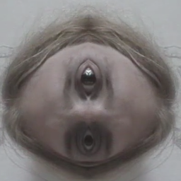

MirrorBooth
Real-time symetrické zrcadlo obličeje ze selfie kamery
macOSWindowsLinuxMobil
Ke stažení
Screenshoty — desktop
Zatím bez screenshotů (desktop).
Screenshoty — mobil
Zatím bez screenshotů (mobile).
Popis
MirrorBooth vytváří v reálném čase symetrické zrcadlo obličeje ze selfie kamery. Zábavná hříčka, která ukáže, jak by vypadala dokonale souměrná tvář.
Postaveno ve Flutteru. Desktop varianta ke svému běhu potřebuje doprovodný signaling_server (Node.js).